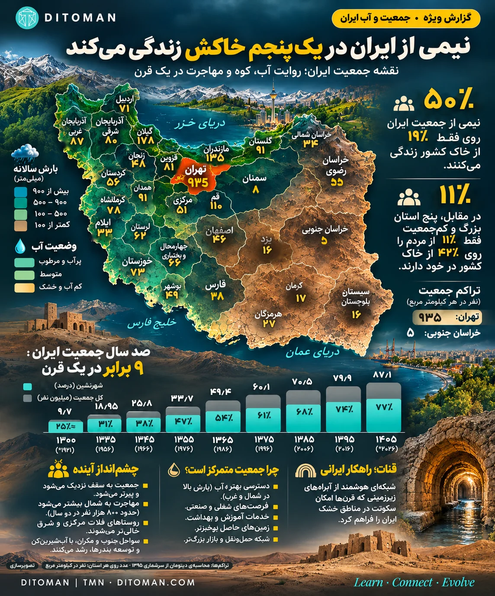
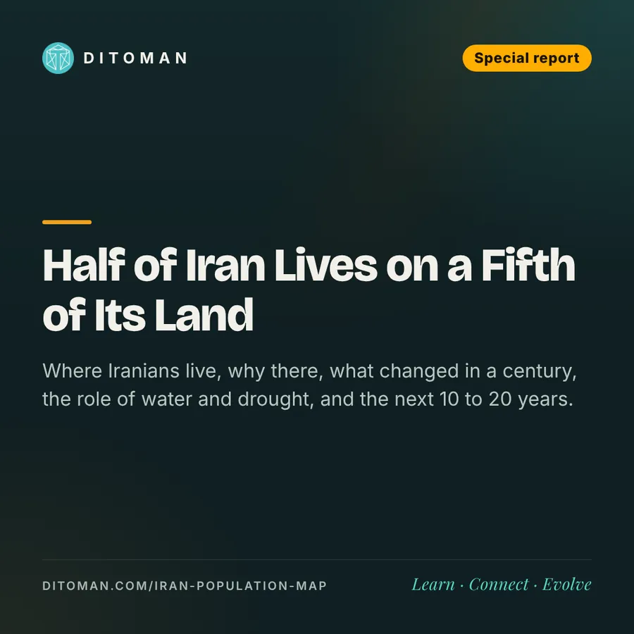
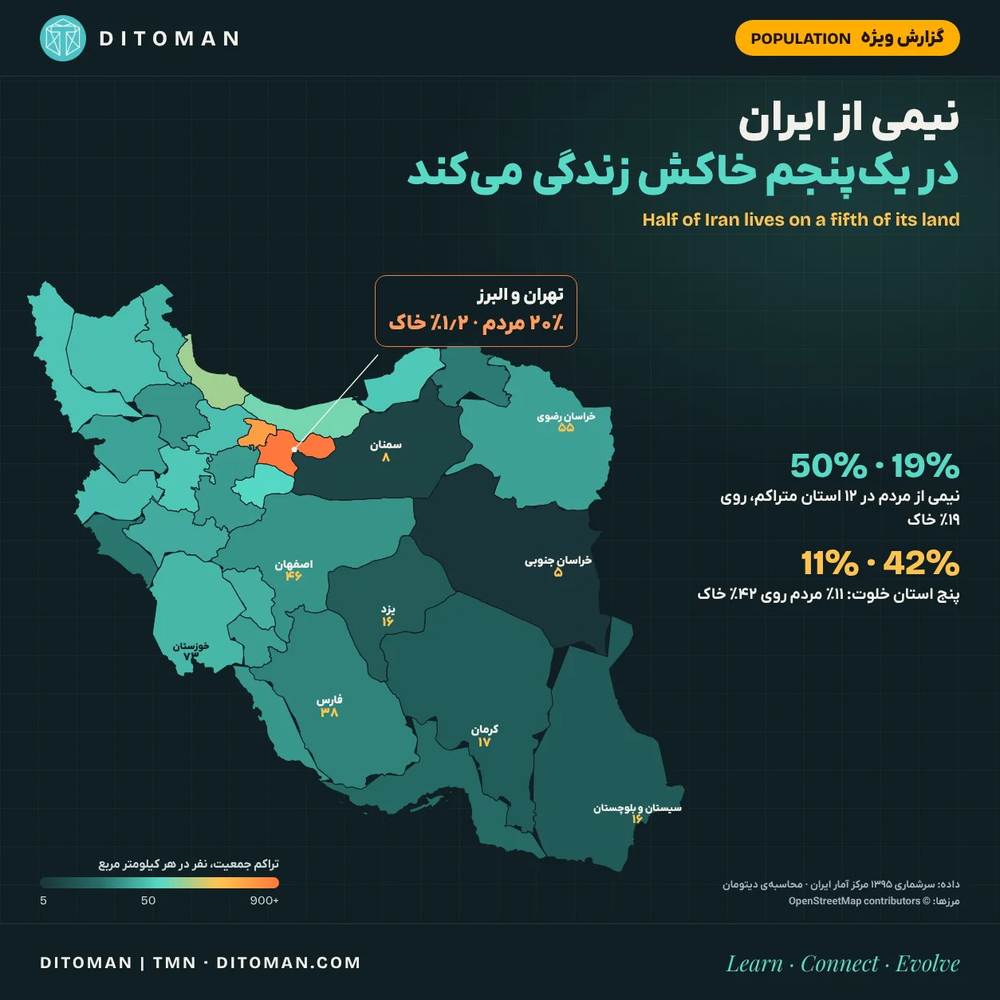
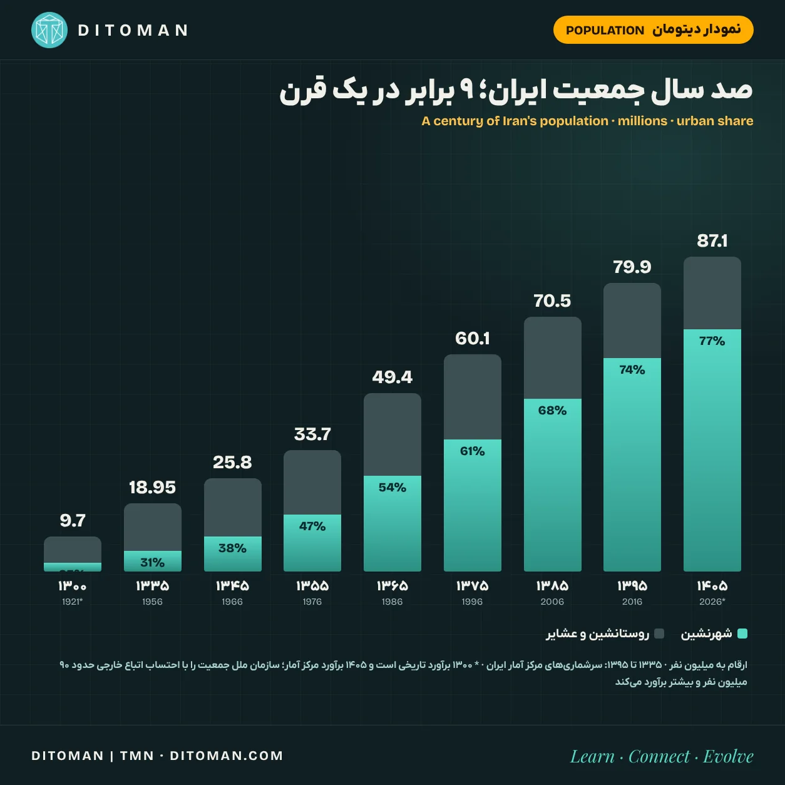

نیمی از ایران در یکپنجم خاکش زندگی میکند؛ صد سال نقشهی جمعیت ایران
Half of Iran lives on a fifth of its land: a century of the population map
مردم ایران کجا زندگی میکنند، چرا آنجا، در صد سال چه تغییر کرده، آب و خشکسالی چه نقشی دارد و ۱۰ تا ۲۰ سال آینده چه میشود.
Where Iranians live, why there, what changed in a century, the role of water and drought, and the next 10 to 20 years.
در یک نگاه
اگر شب از فضا به ایران نگاه کنید، نورها یک چیز را فریاد میزنند: مردم ایران، روی بخش کوچکی از خاک ایران زندگی میکنند. شمال و غرب پرنور است؛ مرکز و شرق، دریایی از تاریکی.
صفحهی Map Logic با دادهی ماهوارهای GHSL اتحادیهی اروپا حساب کرده که نیمی از مردم ایران در شمال خطی زندگی میکنند که فقط ۲۴٪ خاک کشور بالای آن است. ما هم با دادهی سرشماری خودمان حساب کردیم و به نتیجهی مشابهی رسیدیم.
| شاخص | رقم |
|---|---|
| جمعیت ایران، ۱۴۰۵ (مرکز آمار) | حدود ۸۷ میلیون نفر |
| جمعیت در ۱۳۰۰ | حدود ۱۰ میلیون نفر |
| تهران و البرز | ۲۰٪ مردم روی ۱٫۲٪ خاک |
| ۱۲ استان متراکم | ۵۰٪ مردم روی ۱۹٪ خاک |
| پنج استان خلوت | ۱۱٪ مردم روی ۴۲٪ خاک |
| شهرنشینی | از حدود ۲۵٪ در ۱۳۰۰ به حدود ۷۷٪ امروز |
| ولادت سال ۱۴۰۴ | ۸۹۲ هزار؛ کمتر از نصف دههی ۶۰ |
ارقام سهم و تراکم استانها محاسبهی دیتومان بر پایهی سرشماری ۱۳۹۵ است. ارقام Map Logic محاسبهی خود آن صفحه است و ما آن را مستقلاً بازمحاسبه نکردهایم.
1. نقشهای که همهچیز را میگوید
- قطب متراکم: استان تهران حدود ۹۳۵ نفر در هر کیلومتر مربع دارد و البرز حدود ۵۴۰ نفر. میانگین کشور حدود ۴۹ نفر است؛ یعنی تهران نزدیک ۲۰ برابر میانگین
- نوار سبز شمال: گیلان حدود ۱۷۸ و مازندران حدود ۱۳۵ نفر در هر کیلومتر مربع؛ متراکمترین استانها بعد از تهران و البرز
- قلب خالی: خراسان جنوبی حدود ۵ نفر و سمنان حدود ۸ نفر در هر کیلومتر مربع؛ کرمان، یزد و سیستان و بلوچستان هم ۱۶ تا ۱۷ نفر
- حساب ساده: پنج استان خراسان جنوبی، سمنان، یزد، کرمان و سیستان و بلوچستان با هم ۴۲٪ خاک ایران را دارند، اما فقط حدود ۱۱٪ مردم را
- نقشهی Map Logic: به محاسبهی این صفحه، ۵۰٪ مردم ایران در «نیمهی شمالی جمعیتی» زندگی میکنند که ۲۴٪ خاک است؛ و گوشهی شمالغرب، ۲۹٪ مردم را روی ۱۲٪ خاک جا داده است

1.1. این اعداد را چطور حساب کردیم؟
- داده: جمعیت هر استان از سرشماری عمومی نفوس و مسکن ۱۳۹۵ مرکز آمار ایران؛ مساحت هر استان از مرزهای استانی نقشهی آزاد OpenStreetMap
- روش: تراکم هر استان = جمعیت تقسیم بر مساحت. بعد استانها را از متراکمترین به خلوتترین چیدیم و سهم جمعیت و خاک را جمع زدیم
- محدودیت اول: استان واحد درشتی است. درون خود اصفهان، کرمان یا خراسان رضوی هم مردم در چند شهر و دشت جمعاند و بقیهی استان خالی است. پس تمرکز واقعی، از عدد ما هم شدیدتر است
- محدودیت دوم: آخرین سرشماری کامل مال ۱۳۹۵ است. جمعیت امروز بیشتر است، اما سهم نسبی استانها در این ده سال تغییر بزرگی نکرده
- روش ماهوارهای: دادهی GHSL مرکز تحقیقات مشترک اتحادیهی اروپا، جمعیت را در خانههای یک کیلومتری روی نقشه پخش میکند. با این روش ریزتر، Map Logic به «نیمی از مردم روی ۲۴٪ خاک» رسیده که با نتیجهی استانی ما سازگار است
2. چرا اینطور شد؟ پنج دلیل قدیمی
- ۱. باران: میانگین بارش ایران حدود ۲۵۰ میلیمتر در سال است، یعنی نزدیک یکسوم میانگین جهان. اما ساحل خزر بیش از ۱٬۰۰۰ میلیمتر میگیرد و دشتهای مرکزی کمتر از ۱۰۰. مردم همانجا جمع شدند که آب بود
- ۲. دو دیوار کوهستانی: البرز و زاگرس ابرها را نگه میدارند. دامنههایشان سبز و پرآب است و پشتشان، «سایهی باران»: دشت کویر و دشت لوت
- ۳. قنات: شهرهای حاشیهی کویر مثل یزد، کرمان، کاشان و سمنان با قنات زنده ماندند؛ فناوری ایرانی چند هزار ساله که آب کوهپایه را بدون پمپ تا دل دشت میآورد. برای همین این شهرها دقیقاً در مرز کوه و کویر نشستهاند
- ۴. راهها: جادهی ابریشم، بندرهای جنوب و بعدها راهآهن و جادههای اصلی، شهرهایی مثل تبریز، مشهد، اصفهان و بندرعباس را بزرگ کردند
- ۵. پایتخت: تهران در ۱۱۶۴ خورشیدی پایتخت شد، وقتی شهری کوچک بود. تمرکز اداره، دانشگاه، صنعت و سرمایه، آن را به آهنربای جمعیت ایران تبدیل کرد
3. صد سال در چهار پرده

پردهی اول، ۱۳۰۰ تا ۱۳۳۵: ایرانِ روستا و ایل
- حدود ۱۰ میلیون نفر؛ بیشتر مردم روستانشین و بخش بزرگی عشایر کوچرو
- تهران حدود ۲۰۰ هزار نفر جمعیت داشت؛ کمتر از یک محلهی امروزش
- اولین سرشماری سراسری در ۱۳۳۵: ۱۸٫۹۵ میلیون نفر، ۳۱٪ شهرنشین
پردهی دوم، ۱۳۳۵ تا ۱۳۵۵: هجوم به شهر
- اصلاحات ارضی، درآمد نفت و صنعتی شدن، موج بزرگ مهاجرت از روستا به شهر را راه انداخت
- جمعیت به ۳۳٫۷ میلیون رسید و شهرنشینی به ۴۷٪
- تهران از ۱٫۵ میلیون به ۴٫۵ میلیون نفر رسید
پردهی سوم، ۱۳۵۵ تا ۱۳۷۵: انفجار جمعیت
- در ده سال، جمعیت از ۳۳٫۷ به ۴۹٫۴ میلیون رسید؛ رشد سالانهی نزدیک ۴٪، از بالاترینهای جهان
- جنگ، میلیونها نفر را از خوزستان و غرب به شهرهای مرکزی و تهران جابهجا کرد
- از حدود ۱۳۶۰ شهرنشینها از روستانشینها بیشتر شدند
پردهی چهارم، ۱۳۷۵ تا امروز: ترمز ناگهانی
- نرخ باروری از بیش از ۶ فرزند در اوایل دههی ۶۰ به حدود ۲ فرزند در اواخر دههی ۷۰ رسید؛ یکی از سریعترین کاهشهای باروری ثبتشده در جهان
- شهرهای اقماری دور تهران، مثل کرج، اسلامشهر، پردیس و پرند، سریعتر از خود تهران رشد کردند. کرج در ۱۳۸۹ مرکز استانی تازه شد: البرز
- امروز حدود ۷۷٪ مردم شهرنشیناند و بُعد خانوار به ۳٫۱۹ نفر رسیده؛ کمترین از دههی ۳۰ (تابناک به نقل از مرکز آمار)
3.1. نگاه علمی: سه مفهوم برای فهم این نقشه
- گذار جمعیتی: جمعیتشناسان میگویند هر جامعه از «تولد زیاد و مرگ زیاد» به «تولد کم و مرگ کم» میرسد. در فاصلهی این دو، مرگومیر زودتر پایین میآید و جمعیت منفجر میشود. ایران این مسیر را که در اروپا بیش از یک قرن طول کشید، در حدود چهل سال طی کرد
- نخستشهری: وقتی بزرگترین شهر یک کشور چند برابر شهر دوم باشد، به آن «نخستشهر» میگویند. تهران حدود سه برابر مشهد، شهر دوم ایران، جمعیت دارد. نخستشهر، سرمایه و نخبه را به خود میکشد و همین، تمرکز را بیشتر میکند
- ظرفیت بُرد سرزمین: هر منطقه، با آب و خاکی که دارد، فقط تا حدی میتواند جمعیت و فعالیت را تحمل کند. فرونشست دشتها نشانهی آن است که در برخی مناطق از این ظرفیت گذشتهایم
- آمایش سرزمین: دانش چیدن جمعیت و فعالیت، متناسب با توان هر منطقه. سند ملی آمایش سرزمین ایران بر «توسعهی دریامحور» و تقویت سواحل جنوب تأکید دارد
3.2. آنچه در این صد سال ساخته شد
پخش جمعیت در کشوری به این وسعت و خشکی، بدون زیرساخت ممکن نبود. در یک قرن، ایران شبکهای ساخته که روستاهای دورافتاده را هم به کشور وصل کرده است:
- برق: طبق آمار رسمی وزارت نیرو، تقریباً همهی شهرها و بیش از ۹۹٪ روستاهای بالای ده خانوار برق دارند
- گاز: ایران یکی از گستردهترین شبکههای گازرسانی خانگی جهان را دارد؛ طبق آمار رسمی شرکت ملی گاز، حدود ۹۵٪ جمعیت کشور به شبکهی گاز وصلاند
- سلامت: شبکهی «خانهی بهداشت» و بهورزان روستایی، که از دههی ۶۰ گسترش یافت، مراقبت اولیه را به روستاها برد و سازمان جهانی بهداشت بارها از آن بهعنوان نمونهی موفق یاد کرده است. امید به زندگی از حدود ۵۵ سال در دههی ۵۰ به بیش از ۷۵ سال رسیده است
- سواد: نرخ باسوادی از کمتر از نصف جمعیت در سرشماری ۱۳۵۵ به حدود ۹۰٪ رسیده است
- راه و ریل: از راهآهن سراسری ۱۳۱۷ که خلیج فارس را به دریای خزر وصل کرد، تا دهها هزار کیلومتر راه روستایی
- آب: از قناتهای چند هزار ساله، که یونسکو آنها را ثبت جهانی کرده، تا سدها و طرح انتقال آب شیرینشدهی خلیج فارس به صنایع فلات مرکزی
همین زیرساخت است که به شهرهایی مثل یزد، کرمان، بیرجند و زاهدان اجازه داده در دل خشکی بمانند و رشد کنند.
4. نکتههایی که شاید ندانید
- ۹ برابر در یک قرن: جمعیت ایران از حدود ۱۰ میلیون به حدود ۸۷ میلیون رسیده است
- تهران بیش از ۴۰ برابر شد: از حدود ۲۰۰ هزار نفر به نزدیک ۹ میلیون در شهر تهران؛ و بیش از ۱۳ میلیون در استان
- نوزادان نصف شدند: در ۱۳۶۵ بیش از ۲ میلیون نوزاد به دنیا آمد؛ در ۱۴۰۴ فقط ۸۹۲ هزار
- دو کویر، یکچهارم خاک: دشت کویر و دشت لوت تقریباً خالی از سکنهاند. لوت یکی از داغترین نقاط زمین است؛ ماهوارهها دمای سطح بیش از ۷۰ درجه را در آن ثبت کردهاند
- خراسان جنوبی و بنگلادش: خراسان جنوبی تقریباً هماندازهی بنگلادش است؛ اما بنگلادش بیش از ۱۷۰ میلیون نفر جمعیت دارد و خراسان جنوبی کمتر از ۸۰۰ هزار
- شهرهای کوهپایهای: تقریباً همهی شهرهای بزرگ ایران، از تهران و مشهد تا اصفهان، شیراز و تبریز، در کوهپایهاند، نه کنار دریا. ساحل حدود ۲٬۰۰۰ کیلومتری جنوب، در مقایسه با کوهپایهها کمجمعیت مانده است
- جوانترین و پیرترین: سیستان و بلوچستان جوانترین جمعیت و بالاترین باروری را دارد؛ گیلان پیرترین جمعیت و پایینترین باروری را
- دو عدد برای یک کشور: مرکز آمار جمعیت را حدود ۸۷ میلیون میگوید و برآوردهای بینالمللی حدود ۹۰ میلیون و بیشتر؛ بخشی از تفاوت به شمارش اتباع خارجی برمیگردد
5. آب، خشکسالی و جابهجایی مردم
- مهاجرت اقلیمی: طبق گزارشهای رسمی نقلشده در رسانهها، حدود ۸۰۰ هزار نفر در دو سال به دلیل خشکسالی و تغییر اقلیم از استانهای مرکزی و جنوبی به استانهای شمالی رفتهاند (گزارش)
- روستاهای خالی: خشک شدن قناتها و چاهها، هزاران روستا را در فلات مرکزی و شرق خالی کرده است
- فرونشست: برداشت بیرویهی آب زیرزمینی، زمین را در دشتهای تهران، اصفهان، کرمان و خراسان پایین میبرد؛ یعنی درست همان جاهایی که مردم متراکماند
- ظرفیت شمال: سه استان شمالی فقط حدود ۴٪ خاک کشورند. جنگل، شالیزار و ساحلش محدود است و نمیتواند پناهگاه همه باشد
- حتی با باران خوب امسال: یک سال پرباران، سفرههای زیرزمینی چند دهه را پر نمیکند؛ الگوی جابهجایی جمعیت را روند بلندمدت میسازد، نه یک زمستان
6. ده تا بیست سال آینده؛ پیشبینی دیتومان
این بخش تحلیل دیتومان بر پایهی روندهای موجود است، نه پیشبینی قطعی.
| روند | چه انتظاری داریم | چرا |
|---|---|---|
| کل جمعیت | رشد بسیار کند؛ نزدیک شدن به سقف و سپس ثبات یا کاهش | باروری حدود ۱٫۴ تا ۱٫۶ فرزند، زیر سطح جانشینی ۲٫۱ |
| سالمندی | سهم بالای ۶۰ سال از حدود ۱۰٪ به بیش از ۲۰٪ تا ۱۴۲۰ (IntelliNews) | متولدین پرشمار دههی ۶۰ پیر میشوند |
| کلانمنطقهی تهران و کرج | ادامهی رشد، اما کندتر؛ رشد بیشتر در شهرهای اقماری | آب، فرونشست، هزینهی مسکن و آلودگی |
| شمال | فشار مهاجرت و ساختوساز بیشتر | آب و هوا و مهاجرت اقلیمی |
| سواحل جنوب و مکران | رشد، اگر طرحهای توسعه، آبشیرینکن و بندرها پیش بروند | سیاست «توسعهی دریامحور» و بحث انتقال پایتخت |
| فلات مرکزی و شرق | خالیتر شدن روستاها؛ تمرکز در چند شهر بزرگ | کمآبی |
| جنوبشرق | سهم بیشتر از جمعیت جوان کشور | بالاترین نرخ باروری |
| شهرهای میانی | رشد شهرهایی مثل قم، یزد، بندرعباس و اردبیل | مسکن ارزانتر و دورکاری |
- تاریخ برمیگردد؟
آب دوباره دارد نقشهی جمعیت را میکشد؛ همانطور که هزاران سال پیش کشید. تفاوت این است که این بار، فناوری میتواند معادله را عوض کند: آبشیرینکن، انتقال آب، کشاورزی کمآب و انرژی خورشیدی
- پنجرهی جمعیتی: ایران هنوز جمعیت بزرگی در سن کار دارد. این «پنجره» تا حدود دو دههی دیگر باز است و بعد، با پیر شدن متولدین دههی ۶۰، بسته میشود
6.1. موقعیتسنجی: نقطههای قوت و فشار
| نقاط قوت | نقاط فشار | |
|---|---|---|
| جمعیت | نیروی کار بزرگ و تحصیلکرده؛ پنجرهی جمعیتی هنوز باز است | سالمندی سریع؛ کاهش تولد |
| جغرافیا | تنوع اقلیمی؛ بیش از ۲٬۰۰۰ کیلومتر ساحل در جنوب | یکچهارم خاک، کویر؛ بارش یکسوم میانگین جهان |
| زیرساخت | شبکهی سراسری برق، گاز، راه و سلامت | تمرکز خدمات و فرصت در چند کلانشهر |
| آب | دانش قنات، سدسازی و آبشیرینکن | افت آبخوانها و فرونشست |
| انرژی | خورشید فراوان در همان مناطق کمجمعیت | ناترازی برق و گاز در اوج مصرف |
نتیجهی موقعیتسنجی: مناطقی که امروز کمجمعیتاند، همانهاییاند که بیشترین خورشید، زمین و ساحل را دارند. اگر آب و انرژی آنها حل شود، نقشهی جمعیت میتواند متعادلتر شود.
7. برای کسبوکار و زندگی چه معنایی دارد؟
- مسکن: تقاضا در شهرهای اقماری، شمال و شهرهای میانی بیشتر میشود
- سلامت و سالمندی: خدمات سالمندان، از مراقبت تا گردشگری سلامت، بازار بزرگ دو دههی آینده است
- آب: هر فناوری صرفهجویی آب، از کشاورزی تا صنعت، ارزشمندتر میشود
- جنوب: بندرها، انرژی خورشیدی و آبشیرینکن، فرصتهای سواحل خلیج فارس و دریای عماناند
- نیروی کار: با کم شدن جوانان، مهارت و بهرهوری از تعداد مهمتر میشود
8. نگاه دیتومان
نقشهی جمعیت ایران، نقشهی آب ایران است. صد سال پیش، قنات و باران تعیین میکرد مردم کجا زندگی کنند؛ امروز چاه عمیق و سد، و فردا شاید آبشیرینکن و خورشید.
ایران کشور بزرگی است که مردمش در گوشهای از آن جمع شدهاند. پرسش دهههای آینده این است که آیا این تمرکز را با آب و فناوری متعادل میکنیم، یا اجازه میدهیم کمآبی برایمان تصمیم بگیرد.
بیشتر بخوانید
- گوجهفرنگی در دل بیابان؛ کشاورزی با هر قطره آب
- گوگل به سراغ برق از اعماق زمین رفت
- قیمت لحظهای تتر، بیتکوین و طلا
منابع
- مرکز آمار ایران: سرشماریهای عمومی نفوس و مسکن ۱۳۳۵ تا ۱۳۹۵
- تابناک به نقل از مرکز آمار: آمار جمعیت ایران در سال ۱۴۰۵
- European Commission JRC: Global Human Settlement Layer (GHSL)
- Map Logic (Instagram): Half of Iran’s people
- گزارش مهاجرت ۸۰۰ هزار نفر به استانهای شمالی به دلیل تغییر اقلیم
- bne IntelliNews: Iran heading for demographic hole (May 2025)
- ویکیپدیا: جمعیتشناسی ایران
- Province boundaries: OpenStreetMap contributors (ODbL)
آخرین بازبینی: ۲۹ آبان ۱۴۰۵. سهم استانها محاسبهی دیتومان از سرشماری ۱۳۹۵ است؛ بخش آینده تحلیل است، نه پیشبینی قطعی.